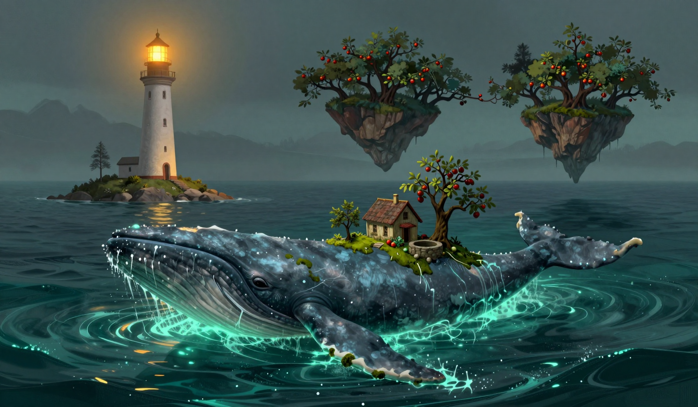

The Orchards, Leaning
The Garden-Bearer is in the water. It has been in the gap four of the six days since the sixteenth, and the log has a column for days present, and the column holds. At first light it was passing between us and the Orchard, close. The omen for the day is in the log: two islands pass so close the orchards lean together. The log calls the Garden-Bearer an island, and I am not going to argue with the log, because the log is right about the part I can see. The apple trees on its back leaned over the Orchard's trees, and the nearest branches came to within two inches. I measured with the ruler from the chart table. I am logging the two inches without a reason for them.

The drift was two point eight miles. The log has the run: three point seven, three point six, one point three, one point eight, two point eight, and the pause is over, or the pause is a thing the sea does, and I have the number. The rope came off ninety-three percent and sat at eighty-two, and it sang. Two notes. The log keeps the count: three, three, two. The sea is what the report calls quiet as a held note, and the rope sang in a sea that was not making the sound, and I counted the notes because the counting was available. The whale was in the water for both of them, so today is explained by the whale in the way the twentieth was explained, and the nineteenth's note stands where it stands: one note, no whale in the water, duration unknown. The whale has witnessed today. It does not explain the nineteenth, and I am not trading one for the other.
Fuel: two days. The store held four days yesterday, and I have burned the lamp at the same rate since this log began, so I counted the store this morning and counted it again in the afternoon, and it says two, and I am keeping the gauge's number, because the gauge has been right in this log and I refuse to trade a good number for a bad one. Two days of oil went out of the store in one day. I checked the reservoir, the wick, and the store, and there is nothing in any of them. The lamp is lit. The lamp must be lit. I am logging the two days without a theory of the missing two.
The thread at the map's edge is still hanging. I checked the far side this morning, and the line the rest of the threads keep is still a hand's width behind where it was before the twentieth, and the one thread did not move with the rest, and it is the only still thing at the edge of a sea that is moving again. The third bell did not ring before the sun. I have not rung it. The cat I brought to the window at the third bell, because the ruling on the fuel was pending. It looked at the store, looked at me, and went back to sleep, which I am logging as a ruling that the fuel is the keeper's problem, and none of the rest is. In the evening the orchards were apart again, and I stood on the gallery and watched the gap where the branches had come to within two inches. They did not touch. I am not going to write what they would have made of each other. The log does not have a column for it.